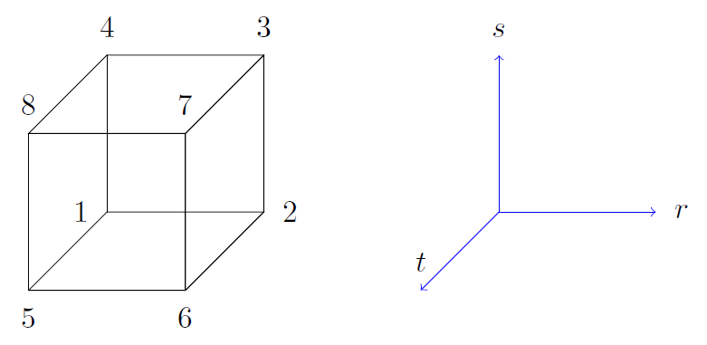
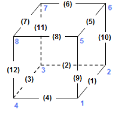
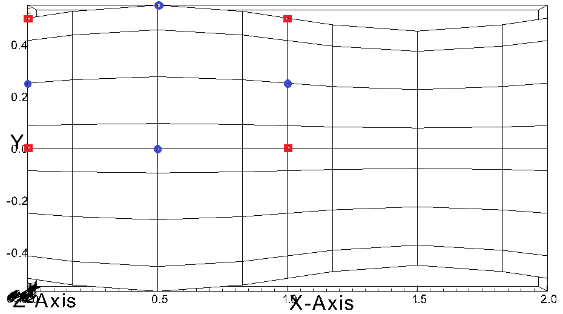
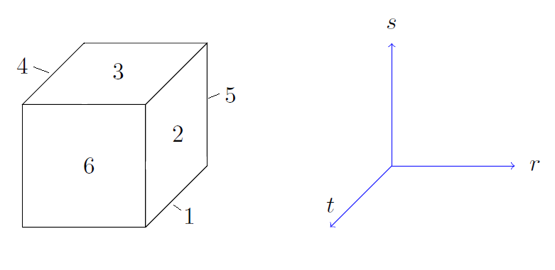

Appendices¶
rea File (legacy)¶
The .rea file consists of several sections. The mesh specifications with geometry, curvature and boundary conditions are in the second section.
Parameters and logical switches¶
- parameters
- These control the runtime parameters such as viscosity,
conductivity, number of steps, timestep size, order of the timestepping,
frequency of output, iteration tolerances, flow rate, filter strength,
etc. There are also a number of free parameters that the user can
use as handles to be passed into the user defined routines in the
.usrfile. - passive scalar data
This information can be specified also in the
uservproutine in the.usrfile. If specified in the.reafile then the coefficients for the conductivity term are listed in ascending order for passive scalars ranging1..9followed by the values for the \(\rho c_p\) coefficients.4 Lines of passive scalar data follows 2 CONDUCT; 2 RHOCP 1.00000 1.00000 1.00000 1.00000 1.00000 1.00000 1.00000 1.00000 1.00000 1.00000 1.00000 1.00000 1.00000 1.00000 1.00000 1.00000 1.00000 1.00000
- logicals
- These determine whether one is computing a steady or unsteady solution, whether advection is turned on, etc.
Next we have the logical switches as follow, a detailed explanation to be found in Logical switches
13 LOGICAL SWITCHES FOLLOW
T IFFLOW
T IFHEAT
T IFTRAN
T T F F F F F F F F F IFNAV & IFADVC (convection in P.S. fields)
F F T T T T T T T T T T IFTMSH (IF mesh for this field is T mesh)
F IFAXIS
F IFSTRS
F IFSPLIT
F IFMGRID
F IFMODEL
F IFKEPS
F IFMVBD
F IFCHAR
Mesh and boundary condition info¶
- geometry
The geometry is specified in an arcane format specifying the \(xyz\) locations of each of the eight points for each element, or the \(xy\) locations of each of the four points for each element in 2D. A line of the following type may be encountered at the beginning of the mesh section of the
.reafile:3.33333 3.33333 -0.833333 -1.16667 XFAC,YFAC,XZERO,YZERO
This part is to be read by Prenek and provides the origin of the system of coordinates
XZERO;YZEROas well as the size of the cartesian unitsXFAC;YFAC. This one line has no impact on the mesh as being read in Nek5000.The header of the mesh data may have the following representation:
**MESH DATA** 6 lines are X,Y,Z;X,Y,Z. Columns corners 1-4;5-8 226 3 192 NEL,NDIM,NELVThe header states first how many elements are available in total (226), what dimension is the the problem (here three dimensional), and how many elements are in the fluid mesh (192).
Table 15 Geometry description in .reafile¶ELEMENT 1 [ 1A] GROUP 0Face {1,2,3,4}\(x_{1,\ldots,4}=\) 0.000000E+00 0.171820E+00 0.146403E+00 0.000000E+00 \(y_{1,\ldots,4}=\) 0.190000E+00 0.168202E+00 0.343640E+00 0.380000E+00 \(z_{1,\ldots,4}=\) 0.000000E+00 0.000000E+00 0.000000E+00 0.000000E+00 Face {5,6,7,8}\(x_{5,\ldots,8}=\) 0.000000E+00 0.171820E+00 0.146403E+00 0.000000E+00 \(y_{5,\ldots,8}=\) 0.190000E+00 0.168202E+00 0.343640E+00 0.380000E+00 \(z_{5,\ldots,8}=\) 0.250000E+00 0.250000E+00 0.250000E+00 0.250000E+00 Following the header, all elements are listed. The fluid elements are listed first, followed by all solid elements if present. In this case there are (34) solid elements.
The data following the header is formatted as shown in Table 15. This provides all the coordinates of an element for top and bottom faces. The numbering of the vertices is shown in Fig. Fig. 10. The header for each element as in Table 15, i.e.
[1A] GROUPis reminiscent of older Nek5000 format and does not impact the mesh generation at this stage. (We are inquiring whether other groups still use it.)Fig. 10 Geometry description in
.reafile (sketch of one element ordering - Preprocessor corner notation)- curvature
This section describes the curvature of the elements. It is expressed as deformation of the linear elements. Therefore, if no elements are curved (if only linear elements are present) the section remains empty.
The section header may look like this:
640 Curved sides follow IEDGE,IEL,CURVE(I),I=1,5, CCURVE
Curvature information is provided by edge and element. Therefore up to 12 curvature entries can be present for each element. Only non-trivial curvature data needs to be provided, i.e., edges that correspond to linear elements, since they have no curvature, will have no entry. The formatting for the curvature data is provided in Table 16.
Table 16 Curvature information specification¶ IEDGEIELCURVE(1)CURVE(2)CURVE(3)CURVE(4)CURVE(5)CCURVE9 2 0.125713 -0.992067 0.00000 0.00000 0.00000 m 10 38 0.125713 -0.992067 3.00000 0.00000 0.00000 m 1 40 1.00000 0.000000 0.00000 0.00000 0.00000 C There are several types of possible curvature information represented by
CCURVE. This include:- ‘C’ stands for circle and is given by the radius of the circle, in
CURVE(1), all other compoentns of theCURVEarray are not used but need to be present. - ‘s’ stands for sphere and is given by the radius and the center of the sphere, thus filling the first 4 components of the
CURVEarray. The fifth component needs to be present but is not utilized. - ‘m’ is given by the coordinates of the midside-node, thus using the first 3 components of the
CURVEarray, and leads to a second order reconstruction of the face. The fourth and fifth components need to be present but are not utilized.
Both ‘C’ and ‘s’ types allow for a surface of as high order as the polynomial used in the spectral method, since they have an underlying analytical description, any circle arc can be fully determined by the radius and end points. However for the ‘m’ curved element descriptor the surface can be reconstructed only up to second order. This can be later updated to match the high-order polynomial after the GLL points have been distributed across the boundaries. This is the only general mean to describe curvature currrently in Nek5000 and corresponds to a HEX20 representation.
Fig. 11 Edge numbering in
.reafile, the edge number is in between parenthesis. The other numbers represent vertices.For better understanding let us focus on what the data in Table 16 signifies. Edge 9 of element 2 has a edge midpoint at (0.125713, -0.992067, 0.00000) and so on. For edge numbering the reader is advised to check Fig. Fig. 11, which illustrates the relationship between vertex numbering and edge numbering.
To maninpulate the geometry in Nek5000 at runtime, it is possible to use
usrdat2. In this subroutine the user can deform the geometry to match the intended surface, followed by a call to the subroutinefixgeomwhich can realign the point distribution in the interior of the element.Fig. 12 Example mesh - without curvature. Square dots represent example vertices.
We also note, that, unlike the geometry data, each curvature entry (as shown in Table 16) is formatted and the format is dependent on the total number of elements. Three cases exist as shown in the code below:
if (nelgt.lt.1000) then write(10,'(i3,i3,5g14.6,1x,a1)') i,eg, $ (vcurve(k,i,kb),k=1,5),cc else if (nelgt.lt.1000000) then write(10,'(i2,i6,5g14.6,1x,a1)') i,eg, $ (vcurve(k,i,kb),k=1,5),cc else write(10,'(i2,i12,5g14.6,1x,a1)') i,eg, $ (vcurve(k,i,kb),k=1,5),cc
The fortran format is as follows:
- For a total number of elements below 1,000 the format is
(i3,i3,5g14.6,1x,a1). - For a total number of elements 1,000 - 999,999 the format is
(i2,i6,5g14.6,1x,a1). - For a total number of elements above 999,999 the format is
(i2,i12,5g14.6,1x,a1).
Fig. 13 Example mesh - with curvature. Circular dots represent example midsize points.
To further illustrate the usage of curvature data, let us examine an example of
.reafile with and wiuthout curvature information and the corresponding mesh representation. Fig. 12 represents a 12 element box mesh (2x2x3, with periodic conditions in \(z\)) without curvature, while Fig. 13 presents the same mesh with a sinusoidal deformation in direction \(y\). Only two edges per element are curved.The input for the mesh without curvature is:
12 3 12 NEL,NDIM,NELV ELEMENT 1 [ 1a] GROUP 0 0.000000 1.000000 1.000000 0.000000 -0.5000000 -0.5000000 0.000000 0.000000 0.000000 0.000000 0.000000 0.000000 0.000000 1.000000 1.000000 0.000000 -0.5000000 -0.5000000 0.000000 0.000000 0.5000000E-01 0.5000000E-01 0.5000000E-01 0.5000000E-01 ELEMENT 2 [ 1a] GROUP 0 1.000000 2.000000 2.000000 1.000000 -0.5000000 -0.5000000 0.000000 0.000000 0.000000 0.000000 0.000000 0.000000 1.000000 2.000000 2.000000 1.000000 -0.5000000 -0.5000000 0.000000 0.000000 0.5000000E-01 0.5000000E-01 0.5000000E-01 0.5000000E-01 ELEMENT 3 [ 1a] GROUP 0 0.000000 1.000000 1.000000 0.000000 0.000000 0.000000 0.5000000 0.5000000 0.000000 0.000000 0.000000 0.000000 0.000000 1.000000 1.000000 0.000000 0.000000 0.000000 0.5000000 0.5000000 0.5000000E-01 0.5000000E-01 0.5000000E-01 0.5000000E-01 ELEMENT 4 [ 1a] GROUP 0 1.000000 2.000000 2.000000 1.000000 0.000000 0.000000 0.5000000 0.5000000 0.000000 0.000000 0.000000 0.000000 1.000000 2.000000 2.000000 1.000000 0.000000 0.000000 0.5000000 0.5000000 0.5000000E-01 0.5000000E-01 0.5000000E-01 0.5000000E-01 ELEMENT 5 [ 1a] GROUP 0 0.000000 1.000000 1.000000 0.000000 -0.5000000 -0.5000000 0.000000 0.000000 0.5000000E-01 0.5000000E-01 0.5000000E-01 0.5000000E-01 0.000000 1.000000 1.000000 0.000000 -0.5000000 -0.5000000 0.000000 0.000000 0.1000000 0.1000000 0.1000000 0.1000000 ELEMENT 6 [ 1a] GROUP 0 1.000000 2.000000 2.000000 1.000000 -0.5000000 -0.5000000 0.000000 0.000000 0.5000000E-01 0.5000000E-01 0.5000000E-01 0.5000000E-01 1.000000 2.000000 2.000000 1.000000 -0.5000000 -0.5000000 0.000000 0.000000 0.1000000 0.1000000 0.1000000 0.1000000 ELEMENT 7 [ 1a] GROUP 0 0.000000 1.000000 1.000000 0.000000 0.000000 0.000000 0.5000000 0.5000000 0.5000000E-01 0.5000000E-01 0.5000000E-01 0.5000000E-01 0.000000 1.000000 1.000000 0.000000 0.000000 0.000000 0.5000000 0.5000000 0.1000000 0.1000000 0.1000000 0.1000000 ELEMENT 8 [ 1a] GROUP 0 1.000000 2.000000 2.000000 1.000000 0.000000 0.000000 0.5000000 0.5000000 0.5000000E-01 0.5000000E-01 0.5000000E-01 0.5000000E-01 1.000000 2.000000 2.000000 1.000000 0.000000 0.000000 0.5000000 0.5000000 0.1000000 0.1000000 0.1000000 0.1000000 ELEMENT 9 [ 1a] GROUP 0 0.000000 1.000000 1.000000 0.000000 -0.5000000 -0.5000000 0.000000 0.000000 0.1000000 0.1000000 0.1000000 0.1000000 0.000000 1.000000 1.000000 0.000000 -0.5000000 -0.5000000 0.000000 0.000000 0.1500000 0.1500000 0.1500000 0.1500000 ELEMENT 10 [ 1a] GROUP 0 1.000000 2.000000 2.000000 1.000000 -0.5000000 -0.5000000 0.000000 0.000000 0.1000000 0.1000000 0.1000000 0.1000000 1.000000 2.000000 2.000000 1.000000 -0.5000000 -0.5000000 0.000000 0.000000 0.1500000 0.1500000 0.1500000 0.1500000 ELEMENT 11 [ 1a] GROUP 0 0.000000 1.000000 1.000000 0.000000 0.000000 0.000000 0.5000000 0.5000000 0.1000000 0.1000000 0.1000000 0.1000000 0.000000 1.000000 1.000000 0.000000 0.000000 0.000000 0.5000000 0.5000000 0.1500000 0.1500000 0.1500000 0.1500000 ELEMENT 12 [ 1a] GROUP 0 1.000000 2.000000 2.000000 1.000000 0.000000 0.000000 0.5000000 0.5000000 0.1000000 0.1000000 0.1000000 0.1000000 1.000000 2.000000 2.000000 1.000000 0.000000 0.000000 0.5000000 0.5000000 0.1500000 0.1500000 0.1500000 0.1500000 ***** CURVED SIDE DATA ***** 0 Curved sides follow IEDGE,IEL,CURVE(I),I=1,5, CCURVE ***** BOUNDARY CONDITIONS ***** ***** FLUID BOUNDARY CONDITIONS ***** W 1 1 0.00000 0.00000 0.00000 0.00000 0.00000 E 1 2 2.00000 4.00000 0.00000 0.00000 0.00000 E 1 3 3.00000 1.00000 0.00000 0.00000 0.00000 v 1 4 0.00000 0.00000 0.00000 0.00000 0.00000 P 1 5 9.00000 6.00000 0.00000 0.00000 0.00000 E 1 6 5.00000 5.00000 0.00000 0.00000 0.00000 W 2 1 0.00000 0.00000 0.00000 0.00000 0.00000 O 2 2 0.00000 0.00000 0.00000 0.00000 0.00000 E 2 3 4.00000 1.00000 0.00000 0.00000 0.00000 E 2 4 1.00000 2.00000 0.00000 0.00000 0.00000 P 2 5 10.0000 6.00000 0.00000 0.00000 0.00000 E 2 6 6.00000 5.00000 0.00000 0.00000 0.00000 E 3 1 1.00000 3.00000 0.00000 0.00000 0.00000 E 3 2 4.00000 4.00000 0.00000 0.00000 0.00000 W 3 3 0.00000 0.00000 0.00000 0.00000 0.00000 v 3 4 0.00000 0.00000 0.00000 0.00000 0.00000 P 3 5 11.0000 6.00000 0.00000 0.00000 0.00000 E 3 6 7.00000 5.00000 0.00000 0.00000 0.00000 E 4 1 2.00000 3.00000 0.00000 0.00000 0.00000 O 4 2 0.00000 0.00000 0.00000 0.00000 0.00000 W 4 3 0.00000 0.00000 0.00000 0.00000 0.00000 E 4 4 3.00000 2.00000 0.00000 0.00000 0.00000 P 4 5 12.0000 6.00000 0.00000 0.00000 0.00000 E 4 6 8.00000 5.00000 0.00000 0.00000 0.00000 W 5 1 0.00000 0.00000 0.00000 0.00000 0.00000 E 5 2 6.00000 4.00000 0.00000 0.00000 0.00000 E 5 3 7.00000 1.00000 0.00000 0.00000 0.00000 v 5 4 0.00000 0.00000 0.00000 0.00000 0.00000 E 5 5 1.00000 6.00000 0.00000 0.00000 0.00000 E 5 6 9.00000 5.00000 0.00000 0.00000 0.00000 W 6 1 0.00000 0.00000 0.00000 0.00000 0.00000 O 6 2 0.00000 0.00000 0.00000 0.00000 0.00000 E 6 3 8.00000 1.00000 0.00000 0.00000 0.00000 E 6 4 5.00000 2.00000 0.00000 0.00000 0.00000 E 6 5 2.00000 6.00000 0.00000 0.00000 0.00000 E 6 6 10.0000 5.00000 0.00000 0.00000 0.00000 E 7 1 5.00000 3.00000 0.00000 0.00000 0.00000 E 7 2 8.00000 4.00000 0.00000 0.00000 0.00000 W 7 3 0.00000 0.00000 0.00000 0.00000 0.00000 v 7 4 0.00000 0.00000 0.00000 0.00000 0.00000 E 7 5 3.00000 6.00000 0.00000 0.00000 0.00000 E 7 6 11.0000 5.00000 0.00000 0.00000 0.00000 E 8 1 6.00000 3.00000 0.00000 0.00000 0.00000 O 8 2 0.00000 0.00000 0.00000 0.00000 0.00000 W 8 3 0.00000 0.00000 0.00000 0.00000 0.00000 E 8 4 7.00000 2.00000 0.00000 0.00000 0.00000 E 8 5 4.00000 6.00000 0.00000 0.00000 0.00000 E 8 6 12.0000 5.00000 0.00000 0.00000 0.00000 W 9 1 0.00000 0.00000 0.00000 0.00000 0.00000 E 9 2 10.0000 4.00000 0.00000 0.00000 0.00000 E 9 3 11.0000 1.00000 0.00000 0.00000 0.00000 v 9 4 0.00000 0.00000 0.00000 0.00000 0.00000 E 9 5 5.00000 6.00000 0.00000 0.00000 0.00000 P 9 6 1.00000 5.00000 0.00000 0.00000 0.00000 W 10 1 0.00000 0.00000 0.00000 0.00000 0.00000 O 10 2 0.00000 0.00000 0.00000 0.00000 0.00000 E 10 3 12.0000 1.00000 0.00000 0.00000 0.00000 E 10 4 9.00000 2.00000 0.00000 0.00000 0.00000 E 10 5 6.00000 6.00000 0.00000 0.00000 0.00000 P 10 6 2.00000 5.00000 0.00000 0.00000 0.00000 E 11 1 9.00000 3.00000 0.00000 0.00000 0.00000 E 11 2 12.0000 4.00000 0.00000 0.00000 0.00000 W 11 3 0.00000 0.00000 0.00000 0.00000 0.00000 v 11 4 0.00000 0.00000 0.00000 0.00000 0.00000 E 11 5 7.00000 6.00000 0.00000 0.00000 0.00000 P 11 6 3.00000 5.00000 0.00000 0.00000 0.00000 E 12 1 10.0000 3.00000 0.00000 0.00000 0.00000 O 12 2 0.00000 0.00000 0.00000 0.00000 0.00000 W 12 3 0.00000 0.00000 0.00000 0.00000 0.00000 E 12 4 11.0000 2.00000 0.00000 0.00000 0.00000 E 12 5 8.00000 6.00000 0.00000 0.00000 0.00000 P 12 6 4.00000 5.00000 0.00000 0.00000 0.00000The input for the mesh with curvature is:
12 3 12 NEL,NDIM,NELV ELEMENT 1 [ 1a] GROUP 0 0.000000 1.000000 1.000000 0.000000 -0.5000000 -0.5000000 0.000000 0.000000 0.000000 0.000000 0.000000 0.000000 0.000000 1.000000 1.000000 0.000000 -0.5000000 -0.5000000 0.000000 0.000000 0.5000000E-01 0.5000000E-01 0.5000000E-01 0.5000000E-01 ELEMENT 2 [ 1a] GROUP 0 1.000000 2.000000 2.000000 1.000000 -0.5000000 -0.5000000 0.000000 0.000000 0.000000 0.000000 0.000000 0.000000 1.000000 2.000000 2.000000 1.000000 -0.5000000 -0.5000000 0.000000 0.000000 0.5000000E-01 0.5000000E-01 0.5000000E-01 0.5000000E-01 ELEMENT 3 [ 1a] GROUP 0 0.000000 1.000000 1.000000 0.000000 0.000000 0.000000 0.5000000 0.5000000 0.000000 0.000000 0.000000 0.000000 0.000000 1.000000 1.000000 0.000000 0.000000 0.000000 0.5000000 0.5000000 0.5000000E-01 0.5000000E-01 0.5000000E-01 0.5000000E-01 ELEMENT 4 [ 1a] GROUP 0 1.000000 2.000000 2.000000 1.000000 0.000000 0.000000 0.5000000 0.5000000 0.000000 0.000000 0.000000 0.000000 1.000000 2.000000 2.000000 1.000000 0.000000 0.000000 0.5000000 0.5000000 0.5000000E-01 0.5000000E-01 0.5000000E-01 0.5000000E-01 ELEMENT 5 [ 1a] GROUP 0 0.000000 1.000000 1.000000 0.000000 -0.5000000 -0.5000000 0.000000 0.000000 0.5000000E-01 0.5000000E-01 0.5000000E-01 0.5000000E-01 0.000000 1.000000 1.000000 0.000000 -0.5000000 -0.5000000 0.000000 0.000000 0.1000000 0.1000000 0.1000000 0.1000000 ELEMENT 6 [ 1a] GROUP 0 1.000000 2.000000 2.000000 1.000000 -0.5000000 -0.5000000 0.000000 0.000000 0.5000000E-01 0.5000000E-01 0.5000000E-01 0.5000000E-01 1.000000 2.000000 2.000000 1.000000 -0.5000000 -0.5000000 0.000000 0.000000 0.1000000 0.1000000 0.1000000 0.1000000 ELEMENT 7 [ 1a] GROUP 0 0.000000 1.000000 1.000000 0.000000 0.000000 0.000000 0.5000000 0.5000000 0.5000000E-01 0.5000000E-01 0.5000000E-01 0.5000000E-01 0.000000 1.000000 1.000000 0.000000 0.000000 0.000000 0.5000000 0.5000000 0.1000000 0.1000000 0.1000000 0.1000000 ELEMENT 8 [ 1a] GROUP 0 1.000000 2.000000 2.000000 1.000000 0.000000 0.000000 0.5000000 0.5000000 0.5000000E-01 0.5000000E-01 0.5000000E-01 0.5000000E-01 1.000000 2.000000 2.000000 1.000000 0.000000 0.000000 0.5000000 0.5000000 0.1000000 0.1000000 0.1000000 0.1000000 ELEMENT 9 [ 1a] GROUP 0 0.000000 1.000000 1.000000 0.000000 -0.5000000 -0.5000000 0.000000 0.000000 0.1000000 0.1000000 0.1000000 0.1000000 0.000000 1.000000 1.000000 0.000000 -0.5000000 -0.5000000 0.000000 0.000000 0.1500000 0.1500000 0.1500000 0.1500000 ELEMENT 10 [ 1a] GROUP 0 1.000000 2.000000 2.000000 1.000000 -0.5000000 -0.5000000 0.000000 0.000000 0.1000000 0.1000000 0.1000000 0.1000000 1.000000 2.000000 2.000000 1.000000 -0.5000000 -0.5000000 0.000000 0.000000 0.1500000 0.1500000 0.1500000 0.1500000 ELEMENT 11 [ 1a] GROUP 0 0.000000 1.000000 1.000000 0.000000 0.000000 0.000000 0.5000000 0.5000000 0.1000000 0.1000000 0.1000000 0.1000000 0.000000 1.000000 1.000000 0.000000 0.000000 0.000000 0.5000000 0.5000000 0.1500000 0.1500000 0.1500000 0.1500000 ELEMENT 12 [ 1a] GROUP 0 1.000000 2.000000 2.000000 1.000000 0.000000 0.000000 0.5000000 0.5000000 0.1000000 0.1000000 0.1000000 0.1000000 1.000000 2.000000 2.000000 1.000000 0.000000 0.000000 0.5000000 0.5000000 0.1500000 0.1500000 0.1500000 0.1500000 ***** CURVED SIDE DATA ***** 24 Curved sides follow IEDGE,IEL,CURVE(I),I=1,5, CCURVE 1 1 0.500000 -0.550000 0.00000 0.00000 0.00000 m 5 1 0.500000 -0.550000 0.500000E-01 0.00000 0.00000 m 1 2 1.50000 -0.450000 0.00000 0.00000 0.00000 m 5 2 1.50000 -0.450000 0.500000E-01 0.00000 0.00000 m 3 3 0.500000 0.550000 0.00000 0.00000 0.00000 m 7 3 0.500000 0.550000 0.500000E-01 0.00000 0.00000 m 3 4 1.50000 0.450000 0.00000 0.00000 0.00000 m 7 4 1.50000 0.450000 0.500000E-01 0.00000 0.00000 m 1 5 0.500000 -0.550000 0.500000E-01 0.00000 0.00000 m 5 5 0.500000 -0.550000 0.100000 0.00000 0.00000 m 1 6 1.50000 -0.450000 0.500000E-01 0.00000 0.00000 m 5 6 1.50000 -0.450000 0.100000 0.00000 0.00000 m 3 7 0.500000 0.550000 0.500000E-01 0.00000 0.00000 m 7 7 0.500000 0.550000 0.100000 0.00000 0.00000 m 3 8 1.50000 0.450000 0.500000E-01 0.00000 0.00000 m 7 8 1.50000 0.450000 0.100000 0.00000 0.00000 m 1 9 0.500000 -0.550000 0.100000 0.00000 0.00000 m 5 9 0.500000 -0.550000 0.150000 0.00000 0.00000 m 1 10 1.50000 -0.450000 0.100000 0.00000 0.00000 m 5 10 1.50000 -0.450000 0.150000 0.00000 0.00000 m 3 11 0.500000 0.550000 0.100000 0.00000 0.00000 m 7 11 0.500000 0.550000 0.150000 0.00000 0.00000 m 3 12 1.50000 0.450000 0.100000 0.00000 0.00000 m 7 12 1.50000 0.450000 0.150000 0.00000 0.00000 m ***** BOUNDARY CONDITIONS ***** ***** FLUID BOUNDARY CONDITIONS ***** W 1 1 0.00000 0.00000 0.00000 0.00000 0.00000 E 1 2 2.00000 4.00000 0.00000 0.00000 0.00000 E 1 3 3.00000 1.00000 0.00000 0.00000 0.00000 v 1 4 0.00000 0.00000 0.00000 0.00000 0.00000 P 1 5 9.00000 6.00000 0.00000 0.00000 0.00000 E 1 6 5.00000 5.00000 0.00000 0.00000 0.00000 W 2 1 0.00000 0.00000 0.00000 0.00000 0.00000 O 2 2 0.00000 0.00000 0.00000 0.00000 0.00000 E 2 3 4.00000 1.00000 0.00000 0.00000 0.00000 E 2 4 1.00000 2.00000 0.00000 0.00000 0.00000 P 2 5 10.0000 6.00000 0.00000 0.00000 0.00000 E 2 6 6.00000 5.00000 0.00000 0.00000 0.00000 E 3 1 1.00000 3.00000 0.00000 0.00000 0.00000 E 3 2 4.00000 4.00000 0.00000 0.00000 0.00000 W 3 3 0.00000 0.00000 0.00000 0.00000 0.00000 v 3 4 0.00000 0.00000 0.00000 0.00000 0.00000 P 3 5 11.0000 6.00000 0.00000 0.00000 0.00000 E 3 6 7.00000 5.00000 0.00000 0.00000 0.00000 E 4 1 2.00000 3.00000 0.00000 0.00000 0.00000 O 4 2 0.00000 0.00000 0.00000 0.00000 0.00000 W 4 3 0.00000 0.00000 0.00000 0.00000 0.00000 E 4 4 3.00000 2.00000 0.00000 0.00000 0.00000 P 4 5 12.0000 6.00000 0.00000 0.00000 0.00000 E 4 6 8.00000 5.00000 0.00000 0.00000 0.00000 W 5 1 0.00000 0.00000 0.00000 0.00000 0.00000 E 5 2 6.00000 4.00000 0.00000 0.00000 0.00000 E 5 3 7.00000 1.00000 0.00000 0.00000 0.00000 v 5 4 0.00000 0.00000 0.00000 0.00000 0.00000 E 5 5 1.00000 6.00000 0.00000 0.00000 0.00000 E 5 6 9.00000 5.00000 0.00000 0.00000 0.00000 W 6 1 0.00000 0.00000 0.00000 0.00000 0.00000 O 6 2 0.00000 0.00000 0.00000 0.00000 0.00000 E 6 3 8.00000 1.00000 0.00000 0.00000 0.00000 E 6 4 5.00000 2.00000 0.00000 0.00000 0.00000 E 6 5 2.00000 6.00000 0.00000 0.00000 0.00000 E 6 6 10.0000 5.00000 0.00000 0.00000 0.00000 E 7 1 5.00000 3.00000 0.00000 0.00000 0.00000 E 7 2 8.00000 4.00000 0.00000 0.00000 0.00000 W 7 3 0.00000 0.00000 0.00000 0.00000 0.00000 v 7 4 0.00000 0.00000 0.00000 0.00000 0.00000 E 7 5 3.00000 6.00000 0.00000 0.00000 0.00000 E 7 6 11.0000 5.00000 0.00000 0.00000 0.00000 E 8 1 6.00000 3.00000 0.00000 0.00000 0.00000 O 8 2 0.00000 0.00000 0.00000 0.00000 0.00000 W 8 3 0.00000 0.00000 0.00000 0.00000 0.00000 E 8 4 7.00000 2.00000 0.00000 0.00000 0.00000 E 8 5 4.00000 6.00000 0.00000 0.00000 0.00000 E 8 6 12.0000 5.00000 0.00000 0.00000 0.00000 W 9 1 0.00000 0.00000 0.00000 0.00000 0.00000 E 9 2 10.0000 4.00000 0.00000 0.00000 0.00000 E 9 3 11.0000 1.00000 0.00000 0.00000 0.00000 v 9 4 0.00000 0.00000 0.00000 0.00000 0.00000 E 9 5 5.00000 6.00000 0.00000 0.00000 0.00000 P 9 6 1.00000 5.00000 0.00000 0.00000 0.00000 W 10 1 0.00000 0.00000 0.00000 0.00000 0.00000 O 10 2 0.00000 0.00000 0.00000 0.00000 0.00000 E 10 3 12.0000 1.00000 0.00000 0.00000 0.00000 E 10 4 9.00000 2.00000 0.00000 0.00000 0.00000 E 10 5 6.00000 6.00000 0.00000 0.00000 0.00000 P 10 6 2.00000 5.00000 0.00000 0.00000 0.00000 E 11 1 9.00000 3.00000 0.00000 0.00000 0.00000 E 11 2 12.0000 4.00000 0.00000 0.00000 0.00000 W 11 3 0.00000 0.00000 0.00000 0.00000 0.00000 v 11 4 0.00000 0.00000 0.00000 0.00000 0.00000 E 11 5 7.00000 6.00000 0.00000 0.00000 0.00000 P 11 6 3.00000 5.00000 0.00000 0.00000 0.00000 E 12 1 10.0000 3.00000 0.00000 0.00000 0.00000 O 12 2 0.00000 0.00000 0.00000 0.00000 0.00000 W 12 3 0.00000 0.00000 0.00000 0.00000 0.00000 E 12 4 11.0000 2.00000 0.00000 0.00000 0.00000 E 12 5 8.00000 6.00000 0.00000 0.00000 0.00000 P 12 6 4.00000 5.00000 0.00000 0.00000 0.00000Note that element and boundary condition information are identical between the two cases.
- ‘C’ stands for circle and is given by the radius of the circle, in
- boundary conditions
Boundary conditions (BCs) are specified for each field in sequence: velocity, temperature and passive scalars. The section header for each field will be as follows (example for the velocity):
***** FLUID BOUNDARY CONDITIONS *****
and the data is stored as illustarted in Table 17. For each field boundary conditions are listed for each face of each element.
Boundary conditions are given in order per each element, see Table 17 column
IEL, and faces listed in ascending order 1-6 in columnIFACE. Note that the header in Table 17 does not appear in the actual.rea.The ordering for faces each element is shown in Fig. 14. A total equivalent to \(6N_{field}\) boundary conditions are listed for each field, where \(N_{field}\) is the number of elements for the specific field. \(N_{field}\) is equal to the total number of fluid elements for the velocity and equal to the total number of elements (including solid elements) for temperature. For the passive scalars it will depend on the specific choice, but typically scalars are solved on the temeprature mesh (solid+fluid).
Fig. 14 Face ordering for each element.
Each BC letter condition is formed by three characters. Common BCs include:
E- internal boundary condition. No additional information needs to be provided.SYM- symmetry boundary condition. No additional information needs to be provided.P- periodic boundary conditions, which indicates that an element face is connected to another element to establish a periodic BC. The connecting element and face need be to specified inCONN-IELandCONN-IFACE.v- imposed velocity boundary conditions (inlet). The value is specified in the user subroutines. No additional information needs to be provided in the.reafile.W- wall boundary condition (no-slip) for the velocity. No additional information needs to be provided.O- outlet boundary condition (velocity). No additional information needs to be provided.t- imposed temperature boundary conditions (inlet). The value is specified in the user subroutines. No additional information needs to be provided in the.reafile.f- imposed heat flux boundary conditions (temperature). The value is specified in the user subroutines. No additional information needs to be provided in the.reafile.I- adiabatic boundary conditions (temeperature). No additional information needs to be provided.
Many of the BCs support either a constant specification or a user defined specification which may be an arbitrary function. For example, a constant Dirichlet BC for velocity is specified by
V, while a user defined BC is specified byv. This upper/lower-case distinction is used for all cases. There are about 70 different types of boundary conditions in all, including free-surface, moving boundary, heat flux, convective cooling, etc. The above cases are just the most used types.Table 17 Formatting of boundary conditions input.¶ CBCIELIFACECONN-IELCONN-IFACEE 1 1 4.00000 3.00000 0.00000 0.00000 0.00000 ................W 5 3 0.00000 0.00000 0.00000 0.00000 0.00000 ................P 23 5 149.000 6.00000 0.00000 0.00000 0.00000 As in the case of the curvature entries, the boundary conditions entries are formatted and the format is dependent on the total number of elements. The code below shows an example of writing statement for boundary conditions:
if (nlg.lt.1000) then write(10,'(a1,a3,2i3,5g14.6)') $ chtemp,s3,eg,i,(vbc(ii,i,kb),ii=1,5) else if (nlg.lt.100000) then write(10,'(a1,a3,i5,i1,5g14.6)') $ chtemp,s3,eg,i,(vbc(ii,i,kb),ii=1,5) else if (nlg.lt.1000000) then write(10,'(a1,a3,i6,5g14.6)') $ chtemp,s3,eg,(vbc(ii,i,kb),ii=1,5) else write(10,'(a1,a3,i12,5g18.11)') $ chtemp,s3,eg,(vbc(ii,i,kb),ii=1,5) end if
The fortran format is as follows:
- For a total number of elements below 1,000 the format is
(a1,a3,2i3,5g14.6). - For a total number of elements 1,000 - 99,999 the format is
(a1,a3,i5,i1,5g14.6). - For a total number of elements 100,000 - 999,999 the format is
(a1,a3,i6,5g14.6). - For a total number of elements above 999,999 the format is
(a1,a3,i12,5g18.11).
We note that:
- The first item in the format for each of the four cases is a string containing a space.
- The second item in the format for each of the four cases is a string specifying the boundary condition type.
- In cases where the total number of elements is bigger than 99,999, the
IFACEitem is omitted. Given that Nek5000 already knows the ordering of the actual faces within each element in columnIFACEis in fact not needed. - The number of significant digits increases in the fourth case. This is needed for periodic boundary conditions.
Output info¶
- restart conditions
- Here, one can specify a file to use as an initial condition. The initial condition need not be of the same polynomial order as the current simulation. One can also specify that, for example, the velocity is to come from one file and the temperature from another. The initial time is taken from the last specified restart file, but this can be overridden.
- history points
The following section defines history points in the
.reafile, see examplevortex/r1854a.rea, orshear4/shear4.rea:0 PACKETS OF DATA FOLLOW ***** HISTORY AND INTEGRAL DATA ***** 56 POINTS. H code, I,J,H,IEL UVWP H 31 31 1 6 UVWP H 31 31 31 6 UVWP H 31 31 31 54 " " " " " "The
"56 POINTS"line needs to be followed by 56 lines of the type shown. However, in each of the following lines, which have theUVWPetc., location is CRUCIAL, it must be layed out exactly as indicated above (these lines contain character strings, they use formatted reads), it is therefore advisable to refer to the examplesvortex, shear4. If you want to pick points close to the center of element 1 and are running withlx1=10, say, you might chooseUVWP H 5 5 5 1. (the indicated point would really be at the middle of the element only iflx1=9)The
UVWPtells the code to write the 3 velocity components and pressure to the.schfile at each timestep (or, more precisely, whenevermod(istep,iohis)=0, whereiohis=param(52)). Note that if you have more than one history point then they are written sequentially at each timestep. Thus 10 steps in the first example withparam(52)=2would write(10/2)*56 = 280lines to the.schfile, with 4 entries per line. The “H” indicates that the entry corresponds to a requested history point. A note of caution: if theijkvalues (5 5 5 in the preceding example line) exceedlx1,ly1,lz1of your SIZE file, then they are truncated to that value. For example, iflx1=10for the data at the top (31 31 31) then the code will useijkof (10 10 10), plus the given element number, in identifying the history point. It is often useful to setijkto large values (i.e., >lx1) because the endpoints of the spectral element mesh are invariant whenlx1is changed.- output specifications
- Outputs are discussed in a separate section of the manual, available online.
It is important to note that Nek5000 currently supports two input file
formats, ASCII and binary. The .rea file format
described above is ASCII. For the binary format, all sections
of the .rea file having storage requirements that scale with
number of elements (i.e., geometry, curvature, and boundary
conditions) are moved to a second, .re2, file and
written in binary. The remaining sections continue to
reside in the .rea file. The distinction between
the ASCII and binary formats is indicated in the .rea
file by having a negative number of elements.
There are converters, reatore2 and re2torea, in the Nek5000
tools directory to change between formats. The binary file
format is the default and important for I/O performance when the
number of elements is large ( \(>100000\), say).
Build Options¶
The shell script makenek is designed to assist the compilation process of Nek5000. The script will create a makefile based on the user settings section in makenek. The GNU gmake utility is used to build Nek5000.
Available configurations options:
| name | values | default | description |
|---|---|---|---|
| PPLIST | string | list of pre-processor symbols (CVODE, …) | |
| MPI | 1, 0 | 1 | use MPI (needed for a multiprocessor computation) |
| FC | string | optional | Fortran compiler (mpif77) |
| CC | string | optional | C compiler (mpicc) |
| FCLAGS | string | optional | optional Fortan compilation flags |
| CCLAGS | string | optional | optional C compilation flags |
| SOURCE_ROOT | string | optional | path of Nek5000 source |
| USR | string | optional | object list of additional files to compile make intructions (makefile_usr.inc required) |
| USR_LFLAGS | string | optional | optional linking flags |
| PROFILING | 1, 0 | 1 | enable internal timers for performance statistics |
| VISIT | 1, 0 | 0 | Toggles Visit in situ. See Visit_in_situ for details |
| VISIT_INSTALL | string | VISIT in situ | Path to VISIT install path. See Visit_in_situ for details. |
| VISIT_STOP | true, false | false | When running VISIT in situ, simulation stops after step 1 to connect VISIT. |
Internal Input Parameters/Switches¶
Parameters¶
P030).navier5.f: param(7) = param(1) ! rhoCP = rho NOT IN USE!connect2.f: if(param(8) .lt.0.0) param(8) = -1.0/param(8)navier5.f: param(8) = param(2) ! conduct = dyn. viscCPFLD(2,3)!)connect2.f: CPFLD(2,3)=PARAM(9)NSTEP (P011).drive2.f: FINTIM = PARAM(10)connect2.f: param(11) = 1.0drive2.f: NSTEPS = PARAM(11)connect2.f: param(12) = 1.0drive2.f: DT = abs(PARAM(12))drive2.f: IOCOMM = PARAM(13)IOSTEP (P015).drive2.f: TIMEIO = PARAM(14)drive2.f: IOSTEP = PARAM(15)navier5.f: if (iastep.eq.0) iastep=param(15) ! same as iostepCVODECVODE with user-supplied Jacobianconnect2.f: param(19) = 0.0drive2.f: TOLPDF = abs(PARAM(21))hmholtz.f: if (name.eq.'PRES'.and.param(21).ne.0) tol=abs(param(21))drive2.f: TOLHDF = abs(PARAM(22))hmholtz.f: if (param(22).ne.0) tol=abs(param(22))hmholtz.f: if (param(22).lt.0) tol=abs(param(22))*rbn0navier4.f: if (param(22).ne.0) tol = abs(param(22))connect2.f: NPSCAL=INT(PARAM(23))CVODE).drive2.f: TOLREL = abs(PARAM(24))CVODE).drive2.f: TOLABS = abs(PARAM(25))drive2.f: CTARG = PARAM(26)drive2.f: NBDINP = PARAM(27)TORDER (P027).connect2.f: if(param(29).lt.0.0) param(29) = -1.0/param(29)connect2.f: if (param(29).ne.0.) ifmhd = .true.connect2.f: cpfld(ifldmhd,1) = param(29) ! magnetic viscosityuservp subroutine (each scalar separately)uservp subroutine (all scalars at once)connect2.f: if (param(31).ne.0.) ifpert = .true.connect2.f: if (param(31).lt.0.) ifbase = .false. ! don't time adv base flowconnect2.f: npert = abs(param(31)).re2 file, 0: all.connect2.f: if (param(32).gt.0) nfldt = ibc + param(32)-1hsmg.f:c if (param(41).eq.1) ifhybrid = .true. \(\leftarrow\) NOT IN USE!navier6.f: if (lx1.eq.2) param(43)=1.navier6.f: if (param(43).eq.0) call hsmg_setupsubs1.f: FACTOR = PARAM(45)SETICS).drive2.f: irst = param(46)ic.f: irst = param(46) ! for lee's restart (rarely used)subs1.f: irst = param(46)mvmesh.f: VNU = param(47)drive2.f:c IF (PARAM(49) .LE. 0.0) PARAM(49) = TLFACturb.f: TLFAC = PARAM(49)prepost.f: if (param(52).ge.1) iohis=param(52)drive2.f: if (param(54).ne.0) icvflow = abs(param(54))drive2.f: if (param(54).lt.0) iavflow = 1 ! mean velocitydrive2.f: flowrate = param(55)prepost.f: if (param(63).gt.0) wdsizo = 8 ! 64-bit .fld filepertsupport.f: if(param(64).ne.1) then !fresh start, param(64) is restart flagpostx uses .rea value; other nondefault should be set in usrdat) (if \(\geq 0\) binary else ASCII).connect2.f: param(66) = 6 ! binary is defaultconnect2.f: param(66) = 0 ! ASCIIavg_all (0: every timestep).hmholtz.f: if (nid.eq.0.and.ifprint.and.param(74).ne.0) ifprinthmh=.true.subs1.f: dt=dtopf*param(85)idrive2.f: PARAM(86) = 0 ! No skew-symm. convection for nownavier1.f: if (param(86).ne.0.0) then ! skew-symmetric formMXPREF in SIZEu accordingly)navier5.f: ncut = param(101)+1h2 in sethlmLogical switches¶
Note that by default all logical switches are set to false.
IFFLOW solve for fluid (velocity, pressure).
IFHEAT solve for heat (temperature and/or scalars).
IFTRAN solve transient equations (otherwise, solve the steady Stokes flow).
IFADVC specify the fields with convection.
IFTMSH specify the field(s) defined on T mesh (first field is the ALE mesh).
IFAXIS axisymmetric formulation.
IFSTRS use stress formulation in the incompressible case.
IFLOMACH use low Mach number compressible flow.
IFMGRID moving grid (for free surface flow).
IFMVBD moving boundary (for free surface flow).
IFCHAR use characteristics for convection operator.
IFSYNC use mpi barriers to provide better timing information.
IFUSERVP user-defined properties (e.g., \(\mu\), \(\rho\) varying with space and time.
Commonly used Variables¶
Solution Variables¶
| Variable Name | Size | Type | Short Description |
|---|---|---|---|
vx |
(lx1,ly1,lz1,lelv) | real | x-velocity (u) |
vy |
(lx1,ly1,lz1,lelv) | real | y-velocity (v) |
vz |
(lx1,ly1,lz1,lelv) | real | z-velocity (w) |
pr |
(lx2,ly2,lz2,lelv) | real | pressure (pr) |
t |
(lx1,ly1,lz1,lelt,ldimt) | real | temperature (t) and passive scalars (ps) |
vtrans |
(lx1,ly1,lz1,lelt,ldimt1) | real | convective coefficient |
vdiff |
(lx1,ly1,lz1,lelt,ldimt1) | real | diffusion coefficient |
vxlag |
(lx1,ly1,lz1,lelv,2) | real | x-velocity at previous time steps |
vylag |
(lx1,ly1,lz1,lelv,2) | real | y-velocity at previous time steps |
vzlag |
(lx1,ly1,lz1,lelv,2) | real | z-velocity at previous time steps |
prlag |
(lx2,ly2,lz2,lelv,lorder2) | real | pressure at previous time steps |
tlag |
(lx1,ly1,lz1,lelv,lorder-1,ldimt1) | real | t and ps at previous time steps |
time |
– | real | physical time |
dt |
– | real | time step size |
dtlag |
( 10 ) | real | previous time step sizes |
istep |
– | integer | time step number |
Geometry Variables¶
| Variable Name | Size | Type | Short Description |
|---|---|---|---|
xm1 |
(lx1,ly1,lz1,lelt) | real | x-coordinates for velocity mesh |
ym1 |
(lx1,ly1,lz1,lelt) | real | y-coordinates for velocity mesh |
zm1 |
(lx1,ly1,lz1,lelt) | real | z-coordinates for velocity mesh |
bm1 |
(lx1,ly1,lz1,lelt) | real | mass matrix for velocity mesh |
binvm1 |
(lx1,ly1,lz1,lelv) | real | inverse mass matrix for velocity mesh |
bintm1 |
(lx1,ly1,lz1,lelt) | real | inverse mass matrix for t mesh |
volvm1 |
– | real | total volume for velocity mesh |
voltm1 |
– | real | total volume for t mesh |
xm2 |
(lx2,ly2,lz2,lelv) | real | x-coordinates for pressure mesh |
ym2 |
(lx2,ly2,lz2,lelv) | real | y-coordinates for pressure mesh |
zm2 |
(lx2,ly2,lz2,lelv) | real | z-coordinates for pressure mesh |
unx |
(lx1,ly1,6,lelt) | real | x-component of face unit normal |
uny |
(lx1,ly1,6,lelt) | real | y-component of face unit normal |
unz |
(lx1,ly1,6,lelt) | real | z-component of face unit normal |
area |
(lx1,ly1,6,lelt) | real | face area (surface integral weights) |
Problem Setup Variables¶
| Variable Name | Size | Type | Short Description |
|---|---|---|---|
nid |
– | integer | MPI rank id (lowest rank is always 0) |
nio |
– | integer | I/O node id |
nelv |
– | integer | number of elements in velocity mesh |
nelt |
– | integer | number of elements in t mesh |
ndim |
– | integer | dimensionality of problem (i.e. 2 or 3) |
nsteps |
– | integer | number of time steps to run |
iostep |
– | integer | time steps between data output |
cbc |
(6,lelt,ldimt1) | character*3 | boundary condition |
lglel |
(lelt) | integer | local to global element number map |
gllel |
(lelg) | integer | global to local element number map |
Averaging Variables¶
Arrays associated with the avg_all subroutine
| Variable Name | Size | Type | Short Description |
|---|---|---|---|
uavg |
(ax1,ay1,az1,lelt) | real | time averaged x-velocity |
vavg |
(ax1,ay1,az1,lelt) | real | time averaged y-velocity |
wavg |
(ax1,ay1,az1,lelt) | real | time averaged z-velocity |
pavg |
(ax2,ay2,az2,lelt) | real | time averaged pressure |
tavg |
(ax1,ay1,az1,lelt,ldimt) | real | time averaged temperature and passive scalars |
urms |
(ax1,ay1,az1,lelt) | real | time averaged u^2 |
vrms |
(ax1,ay1,az1,lelt) | real | time averaged v^2 |
wrms |
(ax1,ay1,az1,lelt) | real | time averaged w^2 |
prms |
(ax1,ay1,az1,lelt) | real | time averaged pr^2 |
trms |
(ax1,ay1,az1,lelt,ldimt) | real | time averaged t^2 and ps^2 |
uvms |
(ax1,ay1,az1,lelt) | real | time averaged uv |
vwms |
(ax1,ay1,az1,lelt) | real | time averaged vw |
wums |
(ax1,ay1,az1,lelt) | real | time averaged wu |
iastep |
– | integer | time steps between averaged data output |
Commonly used Subroutines¶
subroutine rescale_x(x,x0,x1)- Rescales the array
xto be in the range(x0,x1). This is usually called fromusrdat2in the.usrfile subroutine normvc(h1,semi,l2,linf,x1,x2,x3)- Computes the error norms of a vector field variable
(x1,x2,x3)defined on mesh 1, the velocity mesh. The error norms are normalized with respect to the volume, with the exception on the infinity norm,linf. subroutine comp_vort3(vort,work1,work2,u,v,w)- Computes the vorticity (
vort) of the velocity field,(u,v,w) subroutine lambda2(l2)- Generates the Lambda-2 vortex criterion proposed by Jeong and Hussain (1995)
subroutine planar_average_z(ua,u,w1,w2)- Computes the r-s planar average of the quantity
u. subroutine torque_calc(scale,x0,ifdout,iftout)- Computes torque about the point
x0. Here scale is a user supplied multiplier so that the results may be scaled to any convenient non-dimensionalization. Both the drag and the torque can be printed to the screen by switching the appropriateifdout(drag)oriftout(torque)logical. subroutine set_obj- Defines objects for surface integrals by changing the value of
hcodefor future calculations. Typically called once withinuserchk(foristep = 0) and used for calculating torque. (see above)
subroutine avg1(avg,f, alpha,beta,n,name,ifverbose)
subroutine avg2(avg,f, alpha,beta,n,name,ifverbose)
subroutine avg3(avg,f,g, alpha,beta,n,name,ifverbose)- These three subroutines calculate the (weighted) average of
f. Depending on the value of the logical,ifverbose, the results will be printed to standard output along with name. Inavg2, thefcomponent is squared. Inavg3, vectorgalso contributes to the average calculation. subroutine outpost(x,vy,vz,pr,tz,' ')- Dumps the current data of
x,vy,vz,pr,tzto an.fldor.f0????file for post processing. subroutine platform_timer(ivrb)- Runs the battery of timing tests for matrix-matrix products,contention-free processor-to-processor ping-pong tests, and
mpi_all_reducetimes. Allows one to check the performance of the communication routines used on specific platforms. subroutine quickmv- Moves the mesh to allow user affine motion.
subroutine runtimeavg(ay,y,j,istep1,ipostep,s5)- Computes, stores, and (for
ipostep!0) prints runtime averages ofj-quantityy(along w/yitself unlessipostep<0) withj+ ‘rtavg_’ + (unique)s5everyipostepforistep>=istep1.s5is a string to append tortavg_for storage file naming. subroutine lagrng(uo,y,yvec,uvec,work,n,m)- Compute Lagrangian interpolant for
uo subroutine opcopy(a1,a2,a3,b1,b2,b3)- Copies
b1toa1,b2toa2, andb3toa3, whenndim = 3, subroutine cadd(a,const,n)- Adds
constto vectoraof sizen. subroutine col2(a,b,n)- For
nentries, calculatesa=a*b. subroutine col3(a,b,c,n)- For
nentries, calculatesa=b*c.
function glmax(a,n)
function glamax(a,n)
function iglmax(a,n)- Calculates the (absolute) max of a vector that is size
n. Prefixiimplies integer type. function i8glmax(a,n)- Calculates the max of an integer*8 vector that is size
n.
function glmin(a,n)
function glamin(a,n)
function iglmin(a,n)- Calculates the (absolute) min of a vector that is size
n. Prefixiimplies integer type.
function glsc2(a,b,n)
function glsc3(a,b,mult,n)
function glsc23(z,y,z,n)- Performs the inner product in double precision.
glsc3uses a multiplier,multandglsc23performsx*x*y*z.
function glsum(x,n)
function iglsum(x,n)
function i8glsum(x,n)- Computes the global sum of
x, where the prefix,ispecifies type integer, andi8specifies type integer*8. subroutine surface_int(dphi,dS,phi,ielem,iside)- Computes the surface integral of scalar array
phiover faceisideof elementielem. The resulting integral is storted indphiand the area indS.
Grid-to-Grid Interpolation¶
To restart from an existing field file onto a new mesh you can call the generic field file reader interpolation subroutine in userchk.
Note that selection of specific fields to read is not currently supported and the source file must include the coordinates.
That means all fields included in foo.f00001 will be overwritten. Usage example:
if (istep.eq.0) call gfldr('foo.f00001')